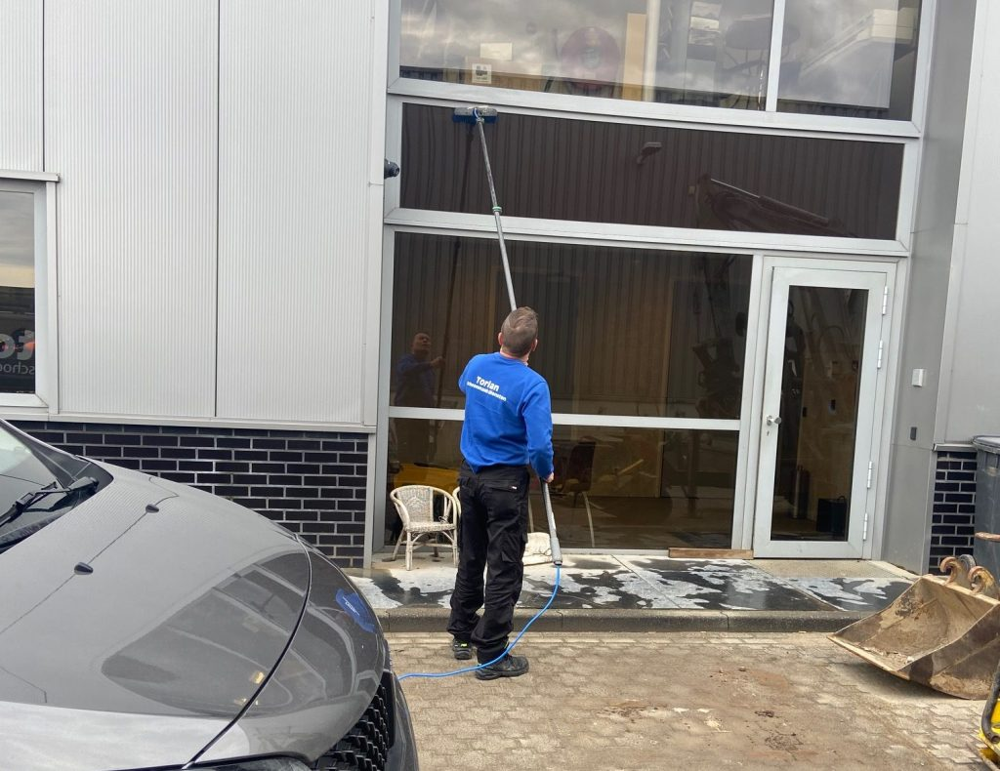

Glasbewassing
Een representatief pand begint bij schone ramen en kozijnen. Wij wassen ramen van bedrijven, winkels en woningen, eenmalig of als vast periodiek onderhoud. Dankzij osmosewater blijven ze langer schoon en vrij van strepen.
Glas op hoogte? Daar hebben we het materiaal voor:
- Hoogwerkers en professionele ladders
- Telewash-systeem (Tucker Pole), zonder hoogwerker
- Osmose-reiniging voor een streeploos resultaat